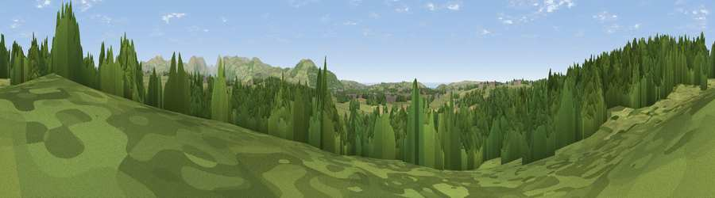

Viewpoint near Keekle
#35178 in England · top 96% of its area beats it · near KeekleThe view, rendered

A 360° render of this exact spot computed from the terrain model, tree cover and land cover — summer colours, afternoon light, calibrated against photographs of famous viewpoints. Real trees, hedges and buildings will differ in detail.
The panorama
Grey silhouette: terrain skyline in each direction (720 bearings, Earth curvature and refraction included). Dashed green: skyline with trees (+15 m) and buildings (+8 m) as obstacles. Blue strip: how far the ground is visible on each bearing.
Where the view opens
Wedge length = distance to the farthest visible ground on that bearing (vegetation-aware). Rings at 10, 25 and 50 km.
What fills the view
50% woodland · 46% grassland · 2% cropland · 1% built-up ·
Angular shares of the visible panorama (visual magnitude), not map area. Landscape diversity 0.37 (0–1 Shannon).
Key numbers
More beautiful places nearby
The staircase of upgrades: each row has a higher view potential than everything closer. Driving times are estimates from straight-line distance, calibrated against real road routing — check an actual route before setting out.
| Place | Direction | Drive | Score |
|---|---|---|---|
| Viewpoint near Moresby Parks | NNE · 1 km | ~4 min | 71.5 |
| Viewpoint near Low Moresby | NNW · 3 km | ~8 min | 71.9 |
| Viewpoint near Moresby Parks | WNW · 3 km | ~8 min | 78.8 |
| Viewpoint near Cleator | SSE · 5 km | ~11 min | 86.1 |
| Crag Fell | ESE · 9 km | ~17 min | 89.1 |
| Ullock Pike | ENE · 25 km | ~41 min | 89.4 |
| Long Side | ENE · 25 km | ~41 min | 89.5 |
| Viewpoint near Finsthwaite | SE · 47 km | ~68 min | 90.3 |
54.54653, -3.52306 · source: screening · position refined by local search. Computed location — check access rights before visiting.